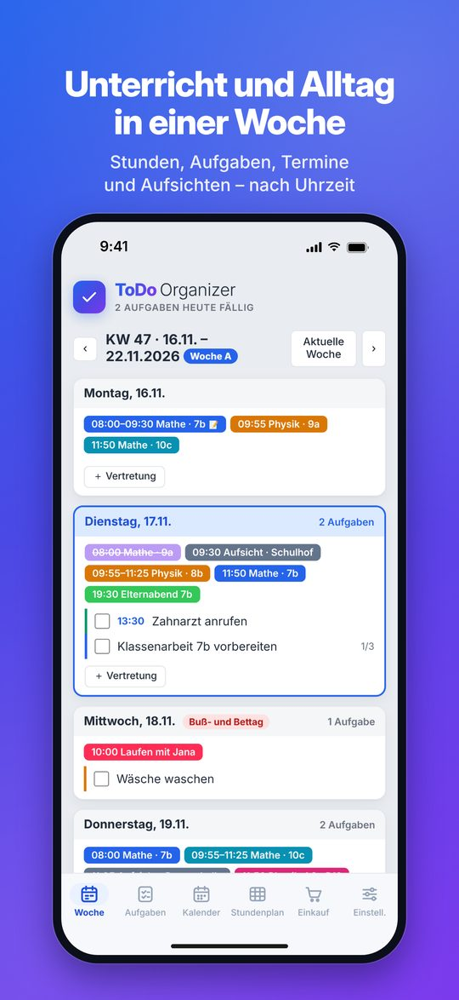
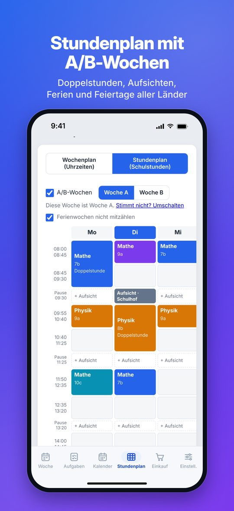
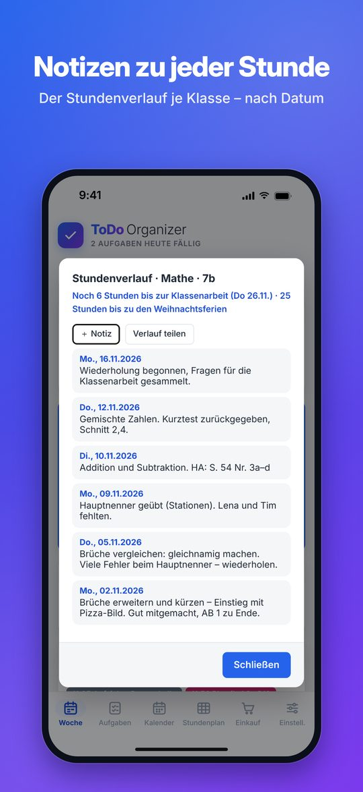
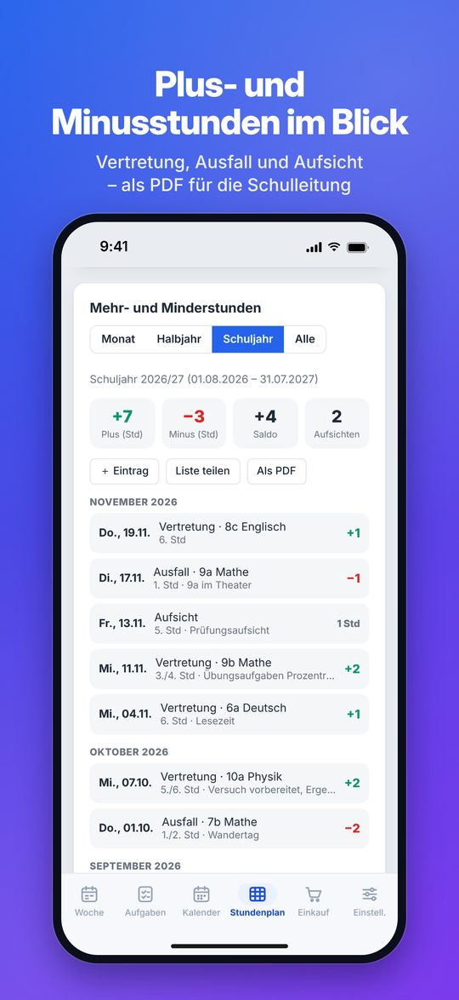
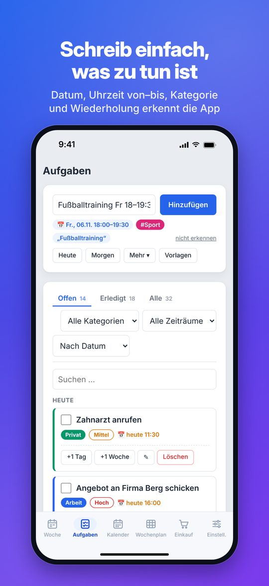
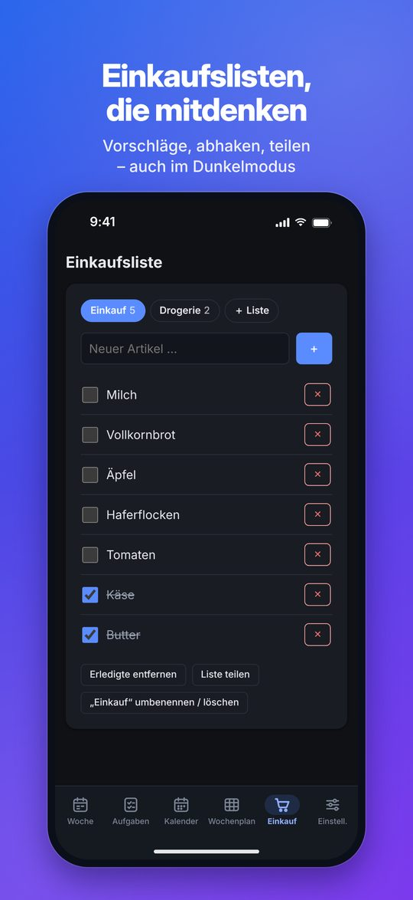

Für Lehrkräfte ein echter Unterrichtsplaner
Stundenplan mit Ferien
Ferien und Feiertage für Deutschland, Österreich und die Schweiz sind eingebaut. A/B-Wochen, Doppelstunden und Aufsichten gehören dazu.
Notizen zu jeder Stunde
Festhalten, was dran war, und „für die nächste Stunde merken“. Der Stundenverlauf je Klasse zeigt alles nach Datum.
Noch X Stunden bis …
Wie viele Stunden bleiben bis zur Klassenarbeit oder zu den Ferien? Die App zählt mit – Ausfälle eingerechnet.
Plus- und Minusstunden
Vertretung und Ausfall mit einem Tipp eintragen, Übersicht je Schuljahr, PDF für die Schulleitung.
Klassenarbeiten planen
Vorbereiten, schreiben, zurückgeben – die Aufgaben legt die App an. Hausaufgaben „bis zur nächsten Stunde“ der Klasse.
Ohne Schülerdaten
Keine Namen, keine Noten, keine Cloud des Anbieters. Darum bleibt die App auch datenschutzrechtlich einfach.
Und für alle anderen
Schreib einfach los
„Training Di 18–19:30 #Sport“ – Datum, Uhrzeit, Kategorie und Wiederholung erkennt die App selbst. Auch per Siri.
Woche und Kalender
Aufgaben, Termine aus deinen Kalendern (auch Google) und Abos von Schule oder Verein in einer Ansicht.
Familie, Studium, Verein
Passende Einstellungen beim Start: Vorlesungen, Termine der Kinder, Trainingszeiten und Spieltage.
Gewohnheiten und Einkauf
Wochenziele mit Serien, Einkaufslisten mit Vorschlägen – und ein Wochenrückblick am Sonntag.
Widget und Kurzbefehle
Der Tag auf dem Home-Bildschirm, die Zahl der fälligen Aufgaben am Symbol, Schnellaktionen per langem Druck.
iPhone und iPad gleich
Abgleich über dein eigenes iCloud-Konto – ohne fremden Server.
Deine Daten bleiben bei dir
Kein Konto, keine Werbung, keine Analyse-Werkzeuge. Alles liegt auf deinem Gerät – und, wenn du willst, in deinem eigenen iCloud-Konto. Sicherungen lassen sich verschlüsseln.
Hilfe und häufige Fragen
Wo liegen meine Daten?
Auf deinem Gerät. Mit eingeschaltetem iCloud-Abgleich zusätzlich in deinem iCloud-Konto bei Apple. Es gibt keinen Server des Anbieters. Sichere regelmäßig unter Einstellungen → Sicherung; die App erinnert dich daran und legt auf Wunsch jede Woche selbst eine Sicherung an.
Wie komme ich auf ein neues Gerät?
Mit iCloud-Abgleich: auf beiden Geräten einschalten, fertig. Sonst: auf dem alten Gerät exportieren, die Datei aufs neue bringen und dort unter Einstellungen → Sicherung → Importieren einlesen.
Was passiert nach der Testphase?
Aufgaben bleiben kostenlos – mit Schnelleingabe, Uhrzeit, Erinnerungen, Wiederholungen, Unterpunkten und Notizen, dazu Ferien und Feiertage. Kalender, Stundenplan mit allen Schul-Funktionen, Gewohnheiten, Einkaufslisten, iCloud-Abgleich und Statistik schaltet die Vollversion frei – ein Einmalkauf ohne Abo, mit Familienfreigabe. Deine Einträge bleiben in jedem Fall gespeichert.
Wie kommen Ferien und Feiertage in die App?
Einstellungen → Feiertage und Ferien → Bundesland oder Kanton wählen. Die Daten für Deutschland, Österreich und die Schweiz sind in der App hinterlegt (Quelle: OpenHolidays API, Lizenz ODbL) – ohne Abruf aus dem Netz, ohne Gewähr.
Wie binde ich meinen Google-Kalender ein?
Einstellungen → Kalender verbinden → „Google-Kalender hinzufügen“. Die App führt Schritt für Schritt durch beide Wege: über das Gerät (empfohlen) oder als Abo mit der geheimen iCal-Adresse.
Wie nutze ich Siri?
„Hey Siri, neue Aufgabe in ToDo Organizer“ – Siri fragt nach dem Text, Datum und Uhrzeit werden erkannt. „Hey Siri, was steht heute an in ToDo Organizer?“ liest deinen Tag vor. Beides gibt es auch in der Kurzbefehle-App.
Ich habe die Vollversion schon gekauft.
Einstellungen → Vollversion → „Käufe wiederherstellen“. Das gilt auch für die Familienfreigabe.
Erinnerungen kommen nicht oder zu spät.
iPhone/iPad: Einstellungen → Mitteilungen → ToDo Organizer → Mitteilungen erlauben. Android: in der App unter Einstellungen → Erinnerungen „Pünktliche Erinnerungen erlauben“ und das Akkusparen für die App ausschalten.
Fragen, Fehler, Wünsche: smaehlmann.appdev@gmail.com